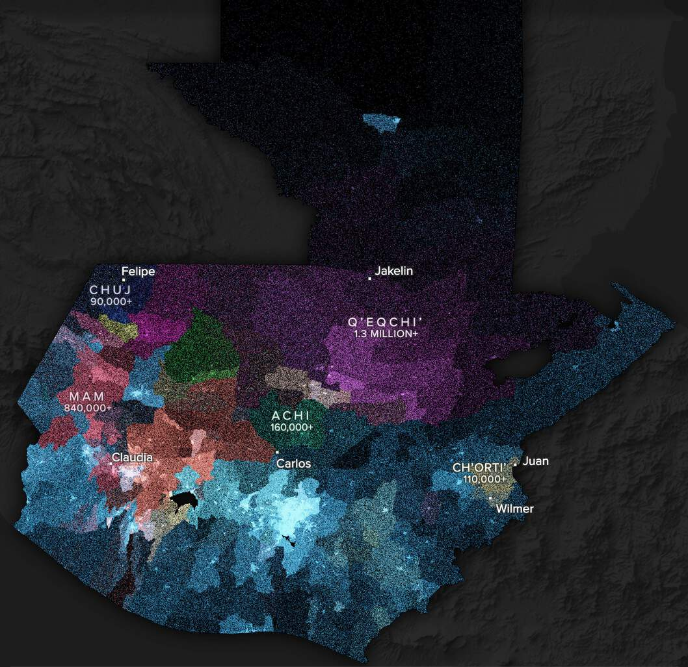
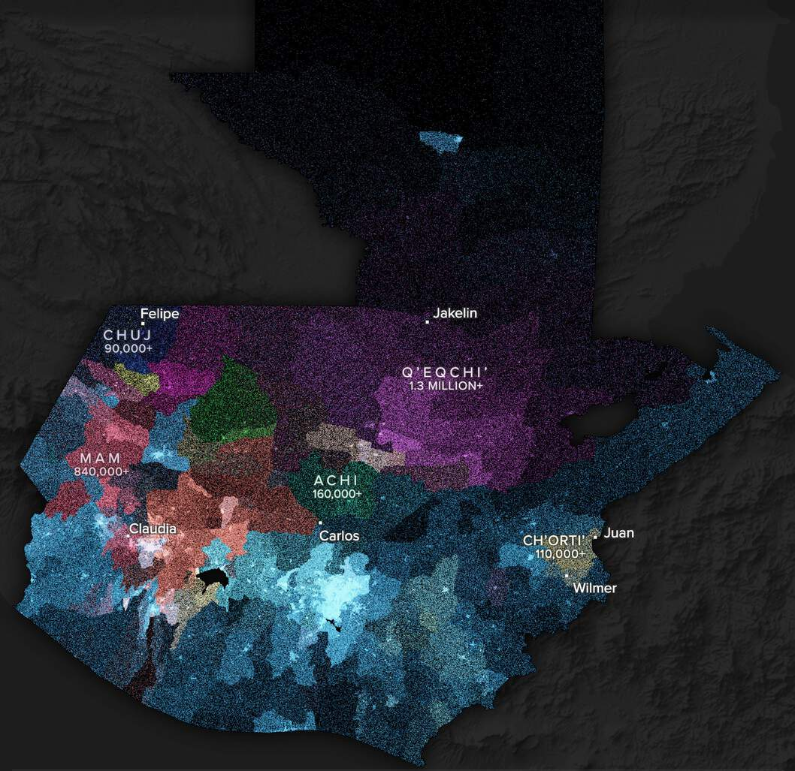

Nick Underwood
Cartography - Data Journalism - Design
Links: Visual Story, Thesis
My M.S. thesis at the University of Wisconsin–Madison was a visual storytelling design study focused on the historical and structural roots of Guatemala-US migration. Here's some relatively brief background on my project—to get fully in the weeds see the link to my thesis above.
My research was theoretically situated in critical and feminist cartography, academic sub-fields that reject the idea of maps as objective communication devices. Instead, they deconstruct maps as politicized documents, embedded in particular social contexts, that exercise power by selectively including, omitting, and emphasizing certain geographic knowledge. In my project, I analyzed the ways that conventional maps and visual stories about Guatemala-US migration reflect and reinforce our dominant cultural discourses by omitting certain perspectives, data, and context. I then designed my own visual story that was centered around these omissions. Below is a summary of what I found and how it shaped the priorities (“requirements”) I set for my own story.
Requirement #1: Contest the Silencing of History
Most visual stories of Guatemala-US migration neglect historical context, reproducing crisis rhetoric surrounding undocumented migration by omitting voices speaking to the centuries of exclusion and dispossession that have led to displacement. In my story, I emphasized the entanglement of present day migration with a history of cyclical invasion in Indigenous communities, including Spanish colonization, the advent of the plantation economy, the Guatemalan Civil War and Genocide, and the modern day incursion of industrial megaprojects.
Requirement #2: Contest US-Centric Savior Rhetoric
Many visual stories replicate US-centric savior rhetoric, leaving out the destructive effects of US imperialism in Guatemala and the role of border militarization in producing migrant suffering. To contest the portrayal of the United States as a magnetic, benevolent sanctuary, I highlighted key moments of US intervention in Guatemala, including the role of the US in the 1954 coup and support of genocidal military governments during the period 1960-1994.
Requirement #3: Amplify Proximate, Situated, and Marginalized Voices
Experiences of Guatemala-US migration differ for people of various identities, with Indigenous and female migrants facing heightened vulnerability to multiple forms of violence before, during, and after transit. Despite these uneven power dynamics, many visual stories of Guatemala-US migration represent Guatemalan migrants as a homogenous group, statistically erasing Indigenous identity and omitting proximate, situated, and marginalized voices. In my story I emphasized the situated experiences of six Indigenous characters and highlighted voices from their communities, trying to avoid distanced, third-person, state-centric narration.
Requirement #4: Shift Focus from US-Mexico Border to the Arterial Border
Within the US, much of the discourse on Guatemala-US migration focuses heavily or exclusively on the US-Mexico border, despite the fact that state bordering practices are increasingly outsourced beyond this border. Many visual stories replicate this bias, reinforcing nationalist modes of thinking and obscuring violence and insecurity along transit routes. An alternative is to visualize the 'arterial border', a term coined by anthropologist Wendy Vogt that conceptualizes the border “not as a fixed entity, but as a constantly shifting and dynamic site of state legitimization, individual agency, and contestation”. In my story I ended up focused more on Guatemala and less on transit, partly because of data availability.
Requirement #5: Challenge the Static, Smooth, Unidirectional Flow Model
The halting, contested, and multi-directional movements of migrants are often hidden behind static, smooth, and unidirectional flow arrows, which mirror xenophobic narratives about ‘invasion’ and conceal the massive scale of border militarization, detention, and deportation. A more nuanced alternative would be to show movement at multiple scales, in multiple directions, emphasizing on-the-ground experiences of migration.
Requirement #6: Shift Focus from Spectacle of Violence to Infrastructures Producing Suffering
When visual stories do highlight the lived experiences of migrants, they tend to fixate narrowly on the spectacle of violence, perpetuating the trope of migrants as victims and leaving out the critical role that infrastructures such as neoliberal markets, debt, and militarized border enforcement regimes play in shaping migratory journeys.
Requirement #7: Foreground Uncertainty and Expose Missing Data
Many visual stories fail to foreground the uncertain and partial nature of their data, instead projecting an illusion of certainty with seemingly ‘exact’ quantitative figures that convey a sense of absolute state control and surveillance. I tried to prominently foreground the uncertainty of quantitative data used in the story, and use estimates made by researchers to show its partial nature.
 
